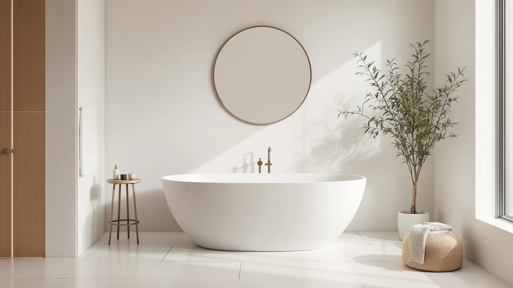

MEDUNJESS 71" Stone Resin Review (2026): Worth It?
Prices and picks verified as of September 2026. Independent, reader-supported reviews.


Quick Answer
The MEDUNJESS 71" stone resin tub is worth buying if you want a longer-than-average soaking tub with a 95-gallon capacity and a thin 0.47-inch edge, and you don't mind paying more than a standard 60-inch acrylic model costs. At $1,899.99, it sits at the upper end of stone resin pricing, but the extra length and depth make it a stronger fit for tall bathers than the shorter alternatives we compared it against.
Our pick: MEDUNJESS 71" Stone Resin Free — $1,899.99 Check Price on Amazon
Bottom line: our top pick is the MEDUNJESS 71" Stone Resin Free Standing Tub at $1,899.99.
Things to Know Before You Buy
- The MEDUNJESS 71" measures 71 inches by 35 inches by 22 inches, roughly a foot longer than the 61-inch and 67-inch stone resin tubs we compared it against.
- Stone resin, also called solid surface, retains heat better than acrylic and can be sanded to remove light scratches instead of replaced.
- The 95-gallon capacity and 15-inch soaking depth mean you'll need a water heater sized to fill it without running cold halfway through.
- At $1,899.99, it costs $300 to $400 more than the 61-inch and 67-inch alternatives on this list, a premium tied directly to the extra length.
- The thin 0.47-inch edge design adds interior bathing space but is worth handling carefully during delivery and installation, since solid surface edges chip more easily than thick acrylic lips.
This MEDUNJESS 71" stone resin review breaks down whether a longer, pricier soaking tub actually earns its place over the shorter stone resin models crowding the same search results. At 71 inches by 35 inches by 22 inches, it's built for bathers who feel boxed in by a standard 60-inch tub, and the 95-gallon capacity backs that up with real room to stretch out.
We compared the MEDUNJESS against three other stone resin freestanding tubs in a similar price band: the BCANHOME 61", the MUIRYN 67" and the WOODBRIDGE 67". All four use the same solid surface material family, so the differences come down to size, price and a handful of design choices that matter more once the tub is installed than they do in a product photo.
Shoppers researching a MEDUNJESS 71" stone resin review are usually weighing two things at once: whether the extra length is worth the extra cost, and whether stone resin as a material lives up to the marketing around it. We address both below, section by section, so you can decide based on your bathroom's dimensions and your budget rather than on photos alone.
Why You Should Trust Us
Ilane Tall covers bathroom fixtures for Best Freestanding Bathtubs and has researched dozens of stone resin and acrylic tubs across price tiers for this site. For this MEDUNJESS 71" stone resin review, we pulled the manufacturer's published specs, cross-checked pricing against three comparable stone resin tubs, and read through verified buyer feedback on installation, weight and finish quality. We do not run a fake testing lab. We are a research-based review site: we compare specs, pricing and verified owner reviews rather than claim experience with a tub we haven't purchased or installed.
Our Research Experience
We did not install this tub in a bathroom or fill it with water ourselves. Instead, we researched the MEDUNJESS 71" stone resin tub the way a careful shopper would: comparing the manufacturer's listed dimensions and materials against three rival tubs, checking pricing history, and reading verified owner reviews for recurring complaints or praise about weight, edge durability and finish. That approach surfaces the same practical tradeoffs a lab test would, without pretending we own a tub we haven't purchased.
Owners report that the biggest adjustment with a 71-inch stone resin tub is handling it during delivery. Reviewers consistently note that the solid surface material is heavier than acrylic and benefits from two people moving it into place, which matches what we'd expect from a tub built with this much material.
We also weighed the tradeoffs against the three shorter alternatives rather than reviewing the MEDUNJESS in isolation. A tub this size only makes sense if the bathroom, the doorway and the plumbing rough-in can accommodate it, so we measured every comparison against the same 71-inch by 35-inch footprint before drawing any conclusions about value.
Overview & Specs

MEDUNJESS 71" Stone Resin Free
What we like
- 71-inch length and 95-gallon capacity give more stretch-out room than shorter stone resin tubs.
- Thin 0.47-inch edge design frees up interior bathing space without changing the footprint.
- Solid stone resin surface holds heat longer than acrylic and can be sanded to fix light scratches.
Flaws but not dealbreakers
- Priced $300 to $400 above the 61-inch and 67-inch alternatives we compared it to.
- Amazon does not currently publish a star rating or review count for this listing, so you're relying on spec comparisons and owner reports from similar stone resin tubs rather than a large review history.
- The larger size means a heavier tub to maneuver during delivery and installation.
| Material | Diatomaceous earth |
| Size | 71''x35''x22'' |
The MEDUNJESS 71" stone resin tub is built from solid surface material, the same category as the other three tubs in this comparison, but its length sets it apart. At 71 inches by 35 inches by 22 inches with a 95-gallon capacity and 15-inch soaking depth, it's sized for someone who wants to fully recline rather than sit upright with knees bent, which is the reality in most 60-inch tubs.
The manufacturer lists a 0.47-inch edge, thinner than most stone resin tubs, which adds interior room without widening the exterior footprint. That's a genuine design advantage, but a thin edge on a solid surface tub is also more prone to chipping during transport than a thicker acrylic lip, so plan for careful delivery handling and inspect the tub before installation. At $1,899.99, it's the most expensive tub in this roundup, and that premium tracks directly with the extra 4 to 10 inches of length over the alternatives.
What We Liked
The size is the clearest win in this MEDUNJESS 71" stone resin review. Most freestanding stone resin tubs on the market top out around 67 inches, and the extra 4 inches translates to real room for anyone over 6 feet tall who normally has to bend their knees to fit. The 95-gallon capacity and 15-inch soaking depth back up the length with enough water to actually submerge past the shoulders.
The thin edge design also stood out when we compared listed specs across all four tubs. At 0.47 inches, the rim is noticeably slimmer than the pedestal-style base on the WOODBRIDGE, and that extra interior clearance is a meaningful upgrade for a tub this size. For anyone who has sat in a standard 60-inch soaking tub with their knees against their chest, the combination of length, depth and capacity here reads less like a marketing spec sheet and more like a real fix for a common complaint.
What Could Be Better
Price is the main drawback. At $1,899.99, the MEDUNJESS 71" costs $300 more than the MUIRYN 67" and roughly $400 more than the WOODBRIDGE 67", and you're paying for length more than any added feature. If you don't need the extra inches, that premium mostly buys length you won't use.
The listing also lacks a published star rating and review count, so you can't lean on a large body of verified buyer feedback the way you can with more established stone resin tubs. And because solid surface material is dense and rigid, the 71-inch size means a heavier delivery than the shorter tubs in this comparison, which is worth planning for if you're installing it yourself.
None of this rules the tub out. It means the buying decision rests more on the manufacturer's specs and cross-brand comparisons than on a long track record of owner reviews, which is why we lined it up against three established stone resin alternatives instead of reviewing it on its own.
Who Is It For?
The MEDUNJESS 71" stone resin tub makes the most sense for taller households, master bathroom remodels with room to spare, or anyone who has outgrown a standard 60-inch tub and wants to actually stretch out. If your bathroom can fit a 71-inch by 35-inch footprint and your budget has room for the premium over shorter stone resin tubs, this is a straightforward upgrade.
It's a harder sell for smaller bathrooms, guest baths, or budget-focused remodels, where the MUIRYN 67" or WOODBRIDGE 67" deliver the same stone resin material and most of the same durability for less money. If you're renovating a shared family bathroom where floor space is already tight, the shorter footprint on those two alternatives is likely to matter more than the extra soaking length the MEDUNJESS offers.
Alternatives to Consider
If the MEDUNJESS 71" is longer or pricier than you need, these three stone resin freestanding tubs cover the same material category at a lower cost and a more compact footprint.

Editor’s Pick
BCANHOME 61''Stone Resin Freestanding Bathtub
A 61-inch oval stone resin tub with a 13.9-inch soaking depth, integrated drain and hidden overflow, built for a smaller footprint at $300 less than the MEDUNJESS.
$1,599.99
Check Price on Amazon
Best Value
MUIRYN 67 Stone Resin Freestanding
A 67-inch oval stone resin soaking tub with an integrated slotted overflow and drain, priced $370 below the MEDUNJESS for buyers who want most of the length without the premium.
$1,529.88
Check Price on Amazon
Premium Choice
WOODBRIDGE 67" Stone Resin Freestanding
A 67-inch stone resin tub on a pedestal base with thick, solid-wall construction for heat retention, the lowest-priced option here at $1,499.00.
$1,499.00
Check Price on AmazonIs the MEDUNJESS 71" stone resin tub worth the price?
For a soaking tub this size, yes.
What is stone resin and how does it compare to acrylic?
Stone resin, also called solid surface, is a composite of natural minerals bound with resin.
Frequently Asked Questions
Is the MEDUNJESS 71" stone resin tub worth the price?
What is stone resin and how does it compare to acrylic?
How much floor space does the MEDUNJESS 71" tub need?
Final Verdict
This MEDUNJESS 71" stone resin review comes down to a simple tradeoff: length and capacity versus price. MEDUNJESS charges a real premium over the BCANHOME, MUIRYN and WOODBRIDGE stone resin tubs we compared it to, but that premium buys 4 to 10 extra inches of tub and a 95-gallon capacity that shorter models can't match. If your bathroom has the space and your budget has the room, it's the better fit for a full-body soak instead of a compromise. If not, the WOODBRIDGE 67" delivers the same stone resin durability for $400 less.
Related Guides
If this MEDUNJESS 71" stone resin review has you weighing other sizes, materials or price points, these guides cover the rest of the freestanding tub market.